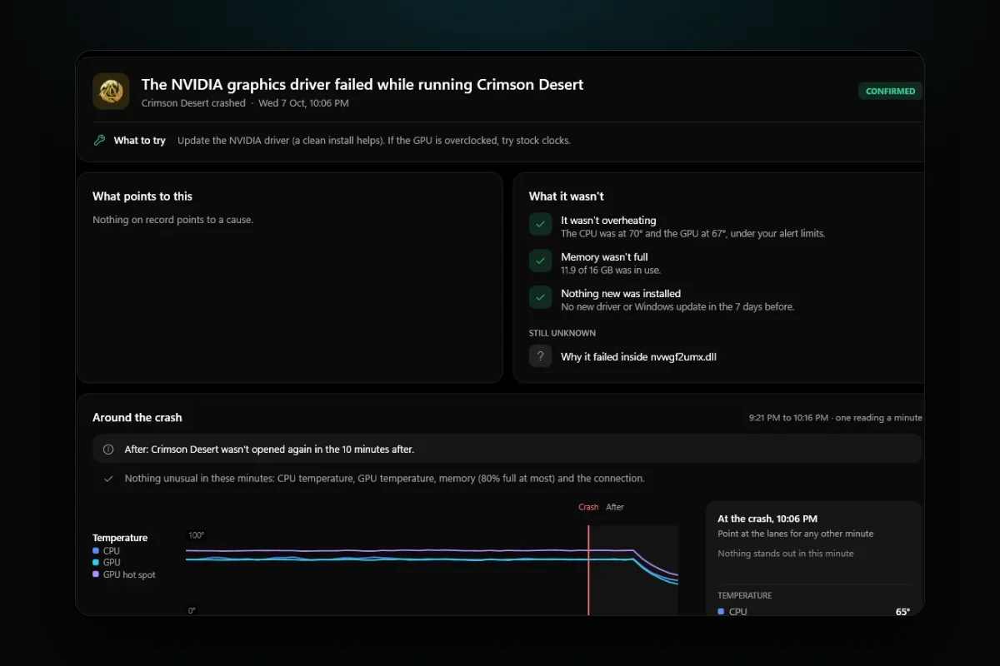

PC problems · Drivers and updates
Games crashing after a graphics driver update, and how to tell why
Two apps crashed on my PC within ten seconds of a new NVIDIA driver going in. How RigSight tells a crash during the install from a bad driver, why games crash after a graphics driver update, and how to roll back or clean install.

The short answer
If games started crashing right after a graphics driver update, roll the driver back first. Open Device Manager, Display adapters, your card, the Driver tab, and press Roll Back Driver. If the crashes stop, wait for the next driver. If they don't, do a clean install, set the GPU back to stock clocks and check your overlays.
On 7 October at 5:40 PM I installed a new NVIDIA driver. Within ten seconds, two programs on my PC had crashed. Cloudflare WARP went down seven seconds after Windows put the new driver in, and RigSight's own recorder went down three seconds after that. Neither crash meant the new driver was bad. Games crashing after a graphics driver update can mean two different things, and each one has its own fix.
How RigSight caught it
That evening RigSight couldn't tell me much, because it was one of the two programs that crashed. The recorder had been asking the graphics card for its temperature through NVIDIA's own library. The old driver went away in the middle of that call, and the call landed on memory that wasn't there any more. WARP crashed in dcomp.dll, a part of Windows that draws app windows. Both programs were open while the driver was swapped under them. The full story of my bug is in The driver update that knocked RigSight out. Since version 0.17.1, RigSight stops reading the graphics card while its driver changes.
That night also changed how RigSight reads crashes. It now checks every app crash and freeze against the graphics driver installs Windows logged. A crash within two minutes of one gets "Likely the driver install" on the Crashes page. A line names the driver, says it "was being installed at that moment" and gives the time of the install and of the crash. The advice is to do nothing. An app that crashed while a driver was replaced under it says nothing about the new driver.
Crashes in the days after are the ones that point at the driver. When a game crashes inside a graphics driver file, RigSight names it in plain words, such as "The NVIDIA graphics driver failed while running Crimson Desert". It marks that Confirmed, because Windows named the file. The picture at the top is that example from RigSight's demo PC, not a crash of mine.
Then the opened crash looks at the week before it. If a new graphics driver, Windows update or BIOS went in during those seven days, RigSight checks whether the same game crashed in the same file in the 30 days before that install.
- If it did, the crash says the driver didn't cause it, with how many times it happened before the install and since.
- If it didn't, the crash says how many days before the driver went in, and that this crash hadn't happened in the 30 days before it.
- If nothing new went in, it says "Nothing new was installed".
On the Games page, each game lists every play and how it ended, newest first. The graphics driver, Windows and game updates that came between plays sit in the same list. The How it runs chart marks every driver and game update against the frame rate. Frame rates need RivaTuner Statistics Server running.

The Timeline lists every graphics driver install with its time, the new version and the one it replaced. Its "This PC now" panel shows the driver you're on and since when. When a driver made a measurable difference, the Before and after filter shows it. That filter counts graphics driver resets, blue screens inside a graphics driver and shut-offs after the GPU hung. It doesn't count game crashes, so for those the Games and Crashes pages are where to look. RigSight is free and open source.
Why games crash after a graphics driver update
A graphics driver sits between every game and the graphics card. A new version changes that layer for every game at once, so a bug in it can crash one game and leave the rest alone. NVIDIA lists the problems it knows about as open issues in each driver's release notes, and often ships a hotfix driver for the worst ones.
Not every crash after an update is the new driver's fault, though. These are the other usual reasons.
- The install itself can crash apps. Programs that are open can crash while Windows swaps the driver under them, as my two did. Your screens can also flicker or go black for a moment. Neither means the driver is bad.
- Leftovers from older drivers can clash. Settings and profiles from earlier versions can conflict with the new one, and a clean install removes them.
- Windows Update sometimes installs a graphics driver on its own, so the driver can change without you running anything.
- Tuning that was borderline can fail. An overclock or undervolt that was stable on the old driver can fail on the new one.
- A driver that lets the card boost higher can show up a weak power supply or a card that runs hot.
- Something else changed the same week. A game patch, a Windows update or a new overlay can look exactly like a driver problem.
After a driver change, the first launch of a game can also take longer while the game rebuilds its shader cache. That is a slow start, not a crash.
How to check games crashing after a driver update and fix it
Start with the checks, then the safest fix. Each step rules something out.
- Check that the driver is the change. Open Settings > Windows Update > Update history and look under Driver updates. This catches drivers Windows installed by itself. Then open Device Manager, expand Display adapters, right-click your graphics card, pick Properties and read the version and date on the Driver tab. Check your game launcher for a game update on the same day too.
- Find the file the game crashed in. Open Event Viewer > Windows Logs > Application and find the Error from Application Error at the time of the crash. The line Faulting module name says which file it crashed in. Files like nvwgf2umx.dll or nvd3dumx.dll belong to the NVIDIA driver, and files starting with amdxx or atiumd belong to AMD's. A crash inside one of those points at the driver. A crash inside the game's own files points at the game. Crashes in the minute or two while the driver was installing don't count. For more on reading these logs, see how to find out why your PC crashed.
- Roll the driver back. This is Microsoft's own way to put the previous driver back, and it is safe. Sign in as an administrator, open Device Manager, expand Display adapters, right-click your graphics card and pick Properties. On the Driver tab, press Roll Back Driver, pick a reason, press Yes and restart if Windows asks. If the button is greyed out, Windows didn't keep an older version. Download the driver you had before from NVIDIA's driver page or AMD's support page, where older versions are listed for each card, and install it with the clean install option below.
- Play the games that crashed for a few sessions. If they now run fine, the new driver was the problem. Stay on the old one until a newer driver lists your game as fixed in its release notes. If Windows Update keeps putting the newer driver back, Microsoft's Show or hide updates troubleshooter, a small file called wushowhide.diagcab, can hide that one driver update. Microsoft made it for Windows 10, and guides report it still works on Windows 11. A newer version of the same update can still install later.
- If the old driver crashes too, or you want to keep the new one, do a clean install. Settings left from older versions can clash with the new driver, and a clean install puts it in fresh. For NVIDIA, download the driver for your card, run the installer, pick Custom (Advanced), tick Perform a clean installation and restart when it finishes. The exact screens can differ a little between driver versions. A clean install resets your NVIDIA Control Panel settings, so note any per-game settings first. For AMD, AMD's advice is to remove AMD Software from Settings > Apps > Installed apps, then install the new version from AMD's support page. The AMD installer's Factory Reset option removes all earlier versions as part of the install, and AMD notes you can't roll back to the old driver after that.
- Use DDU only when a clean install isn't enough. Display Driver Uninstaller, usually called DDU, removes every trace of a graphics driver, and its own developer says it was designed for cases where the normal uninstall fails. Follow the developer's guide. Download the driver you want first, back up anything important, and have your BitLocker recovery key to hand if the drive uses BitLocker. Disconnect from the internet so Windows Update can't slip its own driver in, run DDU in Safe Mode as the developer strongly recommends, then restart, install the driver you downloaded and reconnect. For AMD, the AMD Cleanup Utility does a similar job for problems an uninstall can't fix.
- If it still crashes, look past the driver. Reset MSI Afterburner or your card maker's tool to default and test at stock clocks. Turn the Steam, Discord, NVIDIA and RivaTuner overlays off one at a time, since they all hook into the game. Use your launcher's verify or repair option for the game's files. If the crash comes after a long stretch under load, check GPU temperatures and look at your power supply.
If every game crashes and the screen goes black before Windows recovers, you are probably seeing graphics driver resets rather than ordinary game crashes. For those, read display driver stopped responding and has recovered.
Your next step is the rollback. It takes about five minutes and answers the question directly. If the old driver crashes too, look at the game, your clocks and your temperatures. If the game just closes with no message at all, read why a game crashes to desktop with no error.
Questions people ask
Can an NVIDIA driver update cause game crashes?
Yes. A new driver changes how every game talks to the graphics card, and a bug in it can crash some games and not others. NVIDIA lists known problems as open issues in each driver's release notes and often ships a hotfix driver for the worst ones.
Why does my graphics driver keep crashing?
The usual causes are a bad driver version, leftovers from older drivers, an unstable GPU overclock or undervolt, heat, or a power supply that can't hold up under load. Rolling back and doing a clean install rules out the driver. If it still crashes on a driver that used to work, look at clocks, temperatures and power next.
Should I use DDU every time I update my graphics driver?
No. Its own developer says DDU was designed for cases where the normal driver uninstall fails, and its guide also covers switching between NVIDIA and AMD cards. For an everyday update, the installer's clean install option is enough.
Is it safe to roll back a graphics driver?
Yes. Roll Back Driver puts back the version Windows kept from before the update, and you can update again whenever you like. If the button is greyed out, Windows didn't keep one, and you install the older version from NVIDIA or AMD instead.